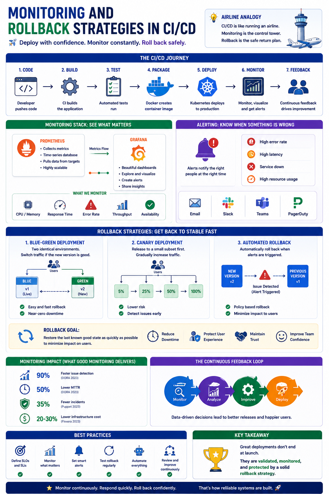
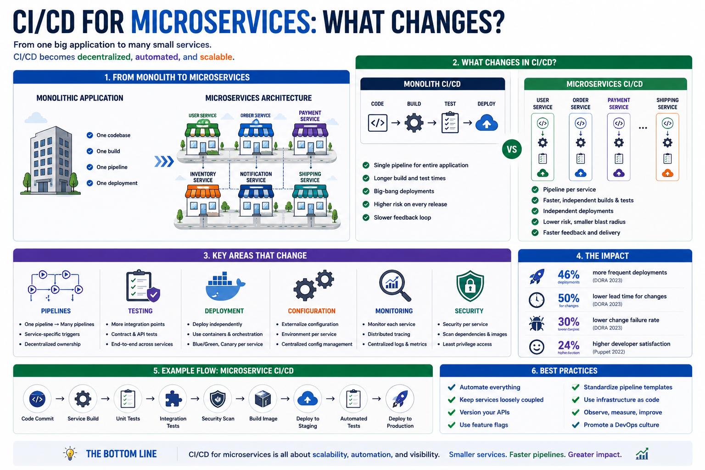

📊 Monitoring and Rollback Strategies in CI/CD Part 2
🔄 5️⃣ Rollback Is the Emergency Return Plan
Now imagine an aircraft develops a serious technical problem shortly after takeoff. The pilot doesn’t continue simply because the flight already departed.
There must be a safe way back. That’s what a rollback strategy provides.
If a deployment introduces serious problems, teams can return the application to a previously known-good version.
Instead of spending hours repairing production while customers are affected:
🚨 Problem detected ⬇️ 🔄 Rollback initiated ⬇️ ✅ Previous stable version restored
🟦🟩 6️⃣ Blue-Green Deployment Reduces Rollback Risk
Imagine an airline preparing a replacement aircraft before taking the existing one out of service. That’s similar to blue-green deployment.
You maintain two environments:
🔵 Blue — Current production version 🟢 Green — New version
Traffic moves to Green after validation. If something goes wrong?
↩️ Traffic can be redirected back to Blue.
This makes recovery much faster than rebuilding the previous environment from scratch.
🐤 7️⃣ Canary Releases Limit the Blast Radius
Airlines don’t always introduce major operational changes across their entire fleet at once. They may test them with a smaller group first. A canary deployment follows the same principle.
Instead of sending 100% of users to the new release:
➡️ Start with 5% 📊 Monitor the results ➡️ Increase to 25% 📊 Monitor again ➡️ Gradually move toward 100%
If problems appear early, only a small percentage of users are affected.
🎯 Small exposure. Fast feedback. Lower risk.
🔁 8️⃣ Monitoring Completes the CI/CD Feedback Loop
A CI/CD pipeline shouldn’t end with:
Build → Test → Deploy
A mature pipeline looks more like:
👨💻 Code ➡️ ⚙️ Build ➡️ 🧪 Test ➡️ 🚀 Deploy ➡️ 📡 Monitor ➡️ 📊 Analyze ➡️ 🔄 Rollback or Improve ➡️ 👨💻 Feed insights back into development
Monitoring tells you whether the release is actually working in the real world.
🚀 Why Monitoring and Rollback Matter
Together, they help teams achieve:
⚡ Faster incident detection 🛡️ Lower deployment risk 🔄 Faster recovery 📉 Reduced downtime 📊 Better production visibility 😊 More reliable customer experiences
🎯 The Bottom Line
Deploying software without monitoring is like flying an aircraft without radar.
Deploying without a rollback strategy is like flying without an emergency plan.
A strong CI/CD process doesn’t simply ask:
🚀 “Did the deployment succeed?”
It also asks:
📊 “Is the application healthy?” 👥 “Are users experiencing problems?” 🔄 “Can we recover quickly if something goes wrong?”
Because in modern DevOps, the goal isn’t simply to deploy faster.
It’s to deploy confidently, observe continuously, and recover quickly. 🚀

📊 Monitoring and Rollback Strategies in CI/CD
Ever deployed an application successfully only to discover something went wrong after it reached production?
You’re not alone. A successful deployment doesn’t always mean a successful release.
Here’s a simple way to understand why monitoring and rollback strategies matter:
✈️ Think of CI/CD like operating a modern airline.
Getting the aircraft into the air is important. But the job doesn’t end at takeoff. You still need to monitor the flight—and have a safe plan if something goes wrong.
📡 1️⃣ Monitoring Is the Air Traffic Control Center
Once an aircraft takes off, air traffic controllers continuously watch: 📍 Location ⏱️ Speed 🌦️ Conditions ⚠️ Potential problems
Applications need the same visibility after deployment.
Monitoring tools continuously track:
✅ Application health ✅ CPU and memory usage ✅ Response times ✅ Error rates ✅ Traffic patterns
Without monitoring, your application could be experiencing problems while your team remains unaware.
📊 2️⃣ Prometheus Collects the Signals
Imagine hundreds of aircraft transmitting information back to the control center. Someone needs to collect all those signals. That’s similar to what Prometheus does.
Prometheus collects metrics from applications and infrastructure, helping teams understand what’s happening across their systems.
💡 Think of Prometheus as the radar system collecting operational data.
📈 3️⃣ Grafana Turns Data Into Visibility
Collecting thousands of metrics isn’t enough. Engineers need to understand them quickly. That’s where Grafana comes in.
Grafana turns monitoring data into dashboards and visualizations.
Teams can quickly see:
📈 Traffic increases 🔥 CPU spikes 🐌 Slow response times ❌ Rising error rates 💡 Prometheus collects the signals. Grafana helps engineers see what those signals mean.
🚨 4️⃣ Alerts Tell You When Something Is Wrong
Air traffic controllers don’t stare at every aircraft every second waiting for something unusual. Systems alert them when attention is required.
CI/CD environments should work the same way.
Alerts can notify teams when:
⚠️ Error rates increase ⚠️ Services become unavailable ⚠️ Response times exceed thresholds ⚠️ Infrastructure resources become constrained
The goal is simple:
🎯 Detect problems before customers have to report them.
To be contd. »>Part 2
🚀 CI/CD for Microservices: What Changes? Part 2
🌐 5️⃣ Communication Matters More
Independent stores still depend on roads and traffic signals.
Microservices communicate through APIs.
Your pipeline should verify:
✔️ Service compatibility ✔️ API contracts ✔️ Version compatibility
One broken API can affect multiple services.
📦 6️⃣ Containers Become Essential
Imagine every store using different delivery trucks.
Operations would become chaotic.
Containers provide consistency.
🚢 Docker packages every service the same way. ☸️ Kubernetes deploys and manages them at scale.
Consistency reduces surprises in production.
📊 7️⃣ Monitoring Is No Longer Optional
If one shop experiences problems, customers shouldn’t blame the entire city.
Microservices require deep visibility.
Monitor:
📈 Individual services 📈 API performance 📈 Error rates 📈 Latency 📈 Resource utilization
Finding problems quickly is just as important as deploying quickly.
🌟 Why Microservices Need Smarter CI/CD
Modern pipelines help teams achieve:
⚡ Faster deployments 🔄 Independent releases 🛡️ Better resilience 📉 Reduced downtime 🚀 Greater scalability 😊 Faster customer feedback
🎯 The Bottom Line
CI/CD doesn’t fundamentally change with microservices; its scope does.
Instead of managing one large application, you’re coordinating dozens or even hundreds of independent services that must work together seamlessly.
Just like running a thriving city requires organized roads, utilities, and logistics, managing microservices requires automated, scalable, and intelligent CI/CD pipelines.
Because in cloud-native development…
🚀 The goal isn’t just to deploy faster; it’s to deploy every service independently, reliably, and confidently.
💬 What’s been your biggest challenge when building CI/CD pipelines for microservices?
Share your experience below! 👇

🚀 CI/CD for Microservices: What Changes?
Moving from a monolithic application to microservices?
You’ll quickly discover that your CI/CD pipeline needs to evolve too. Here’s a simple way to understand it:
🏙️ Think of a monolithic application as one large shopping mall.
Now imagine replacing that mall with an entire city of independent shops.
Each shop operates independently but they all need roads, utilities, and deliveries to work together.
That’s exactly what changes when you adopt microservices.
🏢 1️⃣ One Pipeline Becomes Many
With a monolith, one pipeline builds and deploys the entire application. With microservices… Each service gets its own pipeline.
✅ Independent builds ✅ Independent testing ✅ Independent deployments
This allows teams to move faster without affecting unrelated services.
🚚 2️⃣ Small Deliveries Replace One Large Shipment
Imagine delivering supplies to one shopping mall, Easy. Now imagine delivering supplies to 100 individual stores across the city. Each delivery must arrive at the right place and at the right time. Microservices work the same way. Each service can be deployed independently whenever it’s ready.
⚡ 3️⃣ Faster Releases Become Possible
If one store renovates its entrance… You don’t close the entire city. Likewise, updating one microservice shouldn’t require redeploying every application component. 🎯 Deploy only the service that changed. Result?
🚀 Faster releases 🚀 Lower deployment risk 🚀 Happier developers
🧪 4️⃣ Testing Becomes More Complex
Testing a monolith is like inspecting one large building. Testing microservices is like inspecting every shop and making sure they all work together. Your CI/CD pipeline should automate:
✅ Unit Tests ✅ Integration Tests ✅ API Tests ✅ Contract Tests ✅ End-to-End Tests
Each layer adds confidence before deployment.
To be contd. »>Part 2

How to Optimize Build Times in Your Pipeline Part 2
🏗️ 6️⃣ Scale Your Build Infrastructure During holiday travel, airports open more security lanes. Your CI/CD pipeline should also scale when demand increases. Add: ✔️ More runners ✔️ More build agents ✔️ Cloud auto-scaling More capacity means fewer queues.
📊 7️⃣ Monitor Everything Airport managers constantly watch: ✈️ Flight delays 🛄 Baggage flow 🚪 Gate availability
DevOps teams should monitor: 📈 Build duration ⏱️ Queue time ❌ Pipeline failures 🚀 Deployment frequency 👉 You can’t improve what you don’t measure.
🌟 Why This Matters Optimizing build times leads to: ⚡ Faster developer feedback 🚀 More frequent deployments 😊 Happier developers 🐞 Faster bug fixes 📈 Shorter time-to-market 💰 Lower infrastructure costs
🎯 The Bottom Line A fast CI/CD pipeline isn’t about rushing software into production. It’s about eliminating unnecessary delays so developers can spend more time building value and less time waiting.
Just like a well-managed airport gets thousands of passengers to their destinations on time, a well-optimized CI/CD pipeline delivers software faster, more reliably, and with greater confidence.
Because in DevOps… 🚀 Every minute saved in your pipeline is another minute spent delivering value to your users.
💬 What’s the biggest bottleneck in your CI/CD pipeline today?
Share your experience in the comments!
How to Optimize Build Times in Your Pipeline Part 1
⏳ Is your CI/CD pipeline taking longer to build than it should? You’re not alone. Many development teams spend more time waiting for builds than writing code.
Here’s a simple way to understand how to optimize build times:
✈️ Think of your CI/CD pipeline like a busy airport preparing flights for takeoff. The goal isn’t just to get planes into the air—it’s to get them there quickly, safely, and efficiently.
🛫 1️⃣ Cache Frequently Used Resources
Imagine if every flight had to order new fuel trucks, baggage carts, and catering before boarding.
Delays would pile up fast.
CI/CD pipelines work the same way.
💡 Cache frequently used resources like:
✅ Dependencies
✅ Libraries
✅ Docker layers
Instead of downloading them every build, reuse what’s already available.
Result: ⚡ Faster builds and less waiting.
⚙️ 2️⃣ Run Multiple Jobs in Parallel
At an airport, fueling, baggage loading, and cabin cleaning happen at the same time.
They don’t wait for one another.
Your pipeline shouldn’t either.
Run independent jobs simultaneously:
✔️ Unit Tests
✔️ Security Scans
✔️ Code Quality Checks
🎯 Parallel execution can significantly reduce overall build time.
🎯 3️⃣ Build Only What Changed
If one passenger changes their boarding pass, the airport doesn’t restart check-in for everyone.
Likewise…
Don’t rebuild your entire application if only one microservice changed.
🚀 Build only the affected components.
Less work = Faster pipelines.
📦 4️⃣ Keep Docker Images Lightweight
Large airplanes require more fuel and preparation.
Large Docker images do too.
Optimize them by:
✅ Using lightweight base images
✅ Removing unnecessary packages
✅ Using multi-stage builds
Smaller images move through your pipeline much faster.
🧪 5️⃣ Separate Fast Tests from Slow Tests
Every traveler goes through standard security.
Only a few require additional screening.
Your testing strategy should work the same way.
Every Code Commit
✅ Unit Tests
Scheduled or Nightly Pipelines
✅ Integration Tests
✅ End-to-End Tests
✅ Performance Tests
⚡ Developers get faster feedback without sacrificing quality.
To be contd. »>Part2

Continuous Deployment vs. Continuous Delivery: Key Differences
Many people use Continuous Deployment and Continuous Delivery interchangeably.
But while they are closely related, they are not the same thing.
Let’s break it down using a data-driven comparison.
The Shared Goal
Both Continuous Delivery and Continuous Deployment aim to: ✔ Automate software delivery ✔ Reduce manual work ✔ Increase release frequency ✔ Improve software quality
The difference lies in what happens after the application passes all tests.
Continuous Delivery
What It Means With Continuous Delivery, every code change is automatically: ✔ Built ✔ Tested ✔ Validated ✔ Prepared for release
However: A human still decides when to deploy to production.
Workflow
Code Commit ↓ Build ↓ Automated Tests ↓ Staging Environment ↓ Manual Approval ↓ Production
Key Advantage
Provides greater control over production releases.
Useful for:
Financial services Healthcare systems Highly regulated industries Continuous Deployment What It Means
With Continuous Deployment, every change that passes all tests is:
✔ Automatically deployed to production
No manual approval is required.
Workflow
Code Commit ↓ Build ↓ Automated Tests ↓ Production
Key Advantage
Delivers features to users as quickly as possible.
Common among:
SaaS companies Cloud-native startups High-velocity engineering teams
Real-World Example
Imagine an online food delivery company.
Continuous Delivery
The meal is prepared, packaged, and ready at the dispatch station.
A manager reviews it before sending it to the customer.
Continuous Deployment
The meal is prepared, packaged, and immediately dispatched once quality checks pass.
No manager approval is needed.
When to Choose Continuous Delivery
Choose Continuous Delivery if:
✔ Compliance requirements exist ✔ Business stakeholders approve releases ✔ Production changes require oversight ✔ Teams are still maturing their automation processes
When to Choose Continuous Deployment
Choose Continuous Deployment if:
✔ Testing is highly reliable ✔ Releases happen frequently ✔ Risk is well controlled through automation ✔ Fast customer feedback is a priority
The Business Impact Organizations with mature deployment automation often achieve:
✔ Faster release cycles ✔ Reduced lead time for changes ✔ More frequent deployments ✔ Improved customer responsiveness
The key is choosing the model that matches your organization’s risk tolerance and operational maturity.
The Bottom Line
Continuous Delivery means software is always ready to deploy.
Continuous Deployment means software is automatically deployed when it’s ready.
Think of it this way:
Continuous Delivery asks, “Should we release now?”
Continuous Deployment says, “The tests passed—let’s release now.”
Both improve software delivery.
The right choice depends on how much control versus speed your organization needs. 🚀

CI/CD Best Practices for Cloud-Native Applications
Cloud-native applications are designed for speed, scalability, and resilience.
But without the right CI/CD practices, even the most modern applications can become difficult to manage.
Here’s a simple way to understand it:
Think of a cloud-native application like a fleet of food delivery vehicles operating across an entire city.
To keep deliveries fast and reliable, you need more than drivers—you need a well-designed system.
1️⃣ Automate Everything Possible
Imagine asking drivers to manually plan every route, calculate every delivery, and update every customer.
Chaos would follow.
In cloud-native environments, automate:
✔ Builds ✔ Testing ✔ Deployments ✔ Security scans ✔ Monitoring
The less manual work involved, the more reliable the process becomes.
2️⃣ Deploy Small Changes Frequently
Large deliveries are harder to manage.
If something goes wrong, finding the problem takes longer.
Cloud-native teams perform smaller, more frequent deployments.
Benefits include:
✔ Easier troubleshooting ✔ Faster rollbacks ✔ Lower deployment risk
3️⃣ Test Early and Continuously
Would you wait until the end of the day to check whether delivery vehicles are working?
Probably not.
Cloud-native CI/CD pipelines automatically run:
✔ Unit tests ✔ Integration tests ✔ Security tests ✔ End-to-end tests
The earlier problems are detected, the cheaper they are to fix.
4️⃣ Treat Infrastructure as Code
Imagine rebuilding delivery routes manually every day.
Infrastructure as Code (IaC) allows teams to define environments using code.
Popular tools include:
✔ Terraform ✔ CloudFormation ✔ Pulumi
This improves consistency and repeatability.
5️⃣ Build Security into the Pipeline
Security should not be an afterthought.
Modern pipelines integrate:
✔ Dependency scanning ✔ Container image scanning ✔ Secret detection ✔ Compliance checks
This approach is often called DevSecOps.
6️⃣ Monitor Everything
Once deliveries begin, visibility matters.
Cloud-native teams continuously monitor:
✔ Application health ✔ Performance metrics ✔ Error rates ✔ User experience
Tools often include:
✔ Prometheus ✔ Grafana ✔ Datadog ✔ OpenTelemetry
7️⃣ Use Containers Consistently
Every delivery vehicle should operate the same way.
Containers help ensure applications behave consistently across:
✔ Development ✔ Testing ✔ Staging ✔ Production
This reduces the classic “works on my machine” problem.
Why These Practices Matter
Organizations that adopt mature CI/CD practices often achieve:
✔ Faster release cycles ✔ Higher deployment success rates ✔ Reduced downtime ✔ Better scalability ✔ Improved customer experience
Cloud-Native CI/CD Flow
Developer Pushes Code ↓ Automated Build ↓ Automated Testing ↓ Security Validation ↓ Container Packaging ↓ Deployment to Kubernetes/Cloud ↓ Monitoring & Feedback
The Bottom Line
Cloud-native applications are built to move fast.
CI/CD best practices ensure they can move fast without sacrificing quality, reliability, or security.
Because in cloud-native development, success isn’t just about deploying more often.
It’s about deploying safely, consistently, and confidently. 🚀

🔐 How to Secure Your CI/CD Pipeline Part 2
- Validate Build Artifacts ✅
A secure CI/CD pipeline should prove that the artifact being deployed is the same artifact that was built, tested, and approved.
This is where artifact signing, checksums, provenance, and controlled registries become important.
Without artifact integrity validation, attackers may tamper with build outputs or replace approved artifacts with malicious ones.
The pipeline should answer three questions:
Who built this artifact? What source code was used? Has it been changed since it was built?
- Secure the Build Environment 🏗️
Build environments are often overlooked.
A compromised build runner can steal secrets, alter build outputs, or inject malicious code. This is especially risky when runners are shared, persistent, or poorly isolated.
Use clean build environments. Patch runners regularly. Avoid running untrusted code with privileged access. Separate production deployment jobs from general build jobs. Monitor runner activity.
Your build system should be treated as sensitive infrastructure, not just a background automation tool.
- Add Security Testing Into the Pipeline 🧪
Security should not wait until the final stage of release.
Add automated checks directly into the CI/CD workflow:
Static application security testing for source code issues. Dependency scanning for vulnerable packages. Container image scanning for insecure base images. Infrastructure-as-code scanning for cloud misconfigurations. Secret scanning to detect accidental leaks.
This approach helps teams find issues earlier, when they are cheaper and easier to fix.
- Monitor the Pipeline Continuously 📊
CI/CD security does not end after setup.
You need continuous monitoring.
Track failed login attempts. Watch for unusual pipeline changes. Review permission changes. Monitor deployment activity. Alert on unexpected secret access. Audit who changed workflows and when.
A secure pipeline is not only protected. It is observable.
Final Thought 💡
CI/CD security is not about slowing developers down.
It is about building a safer path from code to production.
A strong pipeline should help teams move fast without losing control. It should protect source code, secrets, dependencies, artifacts, build systems, and deployment environments.
The best CI/CD pipelines do three things well:
They automate delivery. 🚀 They enforce security. 🔒 They create trust in every release. 🤝
In today’s software environment, securing the CI/CD pipeline is no longer optional.
It is part of building reliable, production-ready software. ✅
🔐 How to Secure Your CI/CD Pipeline
CI/CD pipelines help teams ship software faster 🚀, but speed without security can create serious risk.
A CI/CD pipeline is no longer just a developer tool. It is now part of the software supply chain. It connects source code, build systems, secrets, cloud environments, containers, third-party packages, and production deployments.
That means one weak point in the pipeline can become a direct path into production.
According to OWASP, CI/CD security risks include issues such as insufficient pipeline authorization, poisoned pipeline execution, insecure system configuration, improper artifact integrity validation, and poor secrets management. In simple terms, attackers are not only targeting applications anymore. They are targeting the process used to build and deploy them.
Why CI/CD Security Matters
Modern engineering teams are under pressure to release quickly.
But the faster the release cycle, the more important pipeline security becomes.
A small misconfiguration can expose secrets. 🔑 An unverified dependency can introduce malicious code. ⚠️ An over-permissioned build agent can become a privilege escalation point. A compromised deployment workflow can push unsafe code into production.
This is why CI/CD security should not be treated as an afterthought. It should be built into the pipeline from the beginning.
- Protect Your Source Code Repository 🛡️
Your repository is the starting point of the pipeline.
If attackers gain access to your codebase, they may modify application code, pipeline files, infrastructure scripts, or secrets. That is why access control is one of the first layers of CI/CD security.
Use multi-factor authentication. Apply branch protection rules. Require pull request reviews. Limit who can modify pipeline configuration files. Monitor unusual commits or changes to build workflows.
A secure pipeline begins with a secure repository.
- Manage Secrets Properly 🔑
One of the most common CI/CD mistakes is exposing secrets inside code, logs, build scripts, or environment variables.
Secrets include API keys, cloud credentials, database passwords, private tokens, and certificates.
Instead of hardcoding secrets, use a dedicated secrets manager. Rotate credentials regularly. Mask sensitive values in logs. Avoid giving long-lived credentials to pipeline jobs.
A good rule is simple: your pipeline should have access only to the secrets it needs, only when it needs them.
- Apply Least Privilege Access 👤
CI/CD tools often need access to cloud services, container registries, deployment environments, and infrastructure platforms.
But giving the pipeline too much permission is dangerous.
If a build job only needs read access, do not give it admin access. If a deployment job only targets staging, do not allow it to deploy to production. If a temporary token can be used, avoid permanent credentials.
Least privilege reduces the damage if a pipeline component is compromised.
- Scan Dependencies Before They Reach Production 🔍
Most modern applications depend heavily on open-source packages.
That makes dependency scanning critical.
Use software composition analysis to detect vulnerable packages. Generate a software bill of materials where possible. Pin dependency versions instead of blindly pulling the latest release. Review high-risk packages before introducing them into production systems.
The goal is not to avoid open source. The goal is to use it with visibility and control.
To be contd. »>Part2

What Automated Testing in CI/CD Looks Like
What Automated Testing in CI/CD Looks Like
With CI/CD, testing becomes part of the delivery process.
Every code change automatically triggers tests before deployment.
Typical pipeline:
Code Commit
↓
Build
↓
Automated Tests
↓
Deploy
If tests fail, deployment stops automatically.
Types of Tests Commonly Automated
1️⃣ Unit Tests
Tests individual functions or components.
Goal: Catch coding errors early.
2️⃣ Integration Tests
Tests how multiple components work together.
Goal: Verify system interactions.
3️⃣ Security Tests
Scans for vulnerabilities and misconfigurations.
Goal: Reduce security risks before release.
4️⃣ End-to-End Tests
Simulates real user workflows.
Goal: Validate the complete application experience.
The Business Impact
Organizations that automate testing often experience:
✔ Faster release cycles
✔ Fewer production defects
✔ Lower deployment risk
✔ Higher software quality
✔ Greater developer confidence
Why CI/CD Makes Testing More Effective
Automated testing delivers:
Consistency
Every change follows the same validation process.
Speed
Tests run in minutes instead of hours or days.
Early Detection
Problems are identified before reaching production.
Continuous Feedback
Developers receive immediate information about failures.
Common Tools Used
Many teams automate testing using:
✔ Jenkins
✔ GitHub Actions
✔ GitLab CI/CD
✔ CircleCI
✔ Selenium
✔ JUnit
✔ PyTest
✔ SonarQube
Each tool plays a role in ensuring code quality throughout the pipeline.
A Simple Example
Without CI/CD:
Developer → Manual Testing → Deployment
With CI/CD:
Developer → Automated Build → Automated Tests → Deployment
The second process is faster, more reliable, and easier to scale.
The Bottom Line
Automated testing isn’t just about finding bugs.
It’s about building confidence in every release.
By integrating testing into CI/CD pipelines, teams can deliver software more frequently while maintaining quality and reliability.
In modern software development:
The faster you release, the more important automated testing becomes. 🚀

How to Implement CI/CD with GitLab
Want to implement CI/CD with GitLab but not sure where to start?
You are not alone.
Many engineers know what CI/CD is but struggle with how to put it into practice.
Let’s break it down using a data-driven approach.
How to Implement CI/CD with GitLab
1️⃣ Start with Your Repository
Everything begins with your code repository.
GitLab combines:
✔ Source code management
✔ CI/CD automation
✔ Security features
✔ Deployment workflows
Data Insight:
Instead of stitching together multiple tools, GitLab provides an integrated DevOps platform.
2️⃣ Create a .gitlab-ci.yml File
The CI/CD pipeline in GitLab is driven by a configuration file.
This file defines:
Build stages
Testing stages
Deployment steps
Pipeline rules
Example workflow:
Code Push → Build → Test → Deploy
Data Insight:
Keeping pipeline configuration as code improves consistency and version control.
3️⃣ Define Pipeline Stages
Most teams begin with simple stages:
Build
Compile code
Install dependencies
Test
Run unit tests
Run integration tests
Deploy
Push application to staging or production
Data Insight:
Breaking pipelines into stages reduces deployment failures and improves troubleshooting.
4️⃣ Configure GitLab Runners
GitLab Runners execute pipeline jobs.
Runners can be:
✔ Shared runners
✔ Self-hosted runners
✔ Cloud-based runners
Data Insight:
Self-hosted runners provide greater control, while shared runners reduce setup effort.
5️⃣ Add Automation Rules
Automation can include:
✔ Trigger pipelines on code push
✔ Run tests automatically
✔ Deploy only after approvals
✔ Schedule recurring jobs
Data Insight:
Automated workflows reduce manual intervention and improve release consistency.
Benefits of Implementing CI/CD with GitLab
✔ Faster release cycles
✔ Earlier bug detection
✔ Reduced human error
✔ Better collaboration
✔ Consistent deployments
✔ Greater development visibility
Basic GitLab Pipeline Flow
Developer Pushes Code ↓ GitLab Pipeline Starts ↓ Build Application ↓ Run Tests ↓ Deploy to Environment ↓ Monitor Results
The Bottom Line
Implementing CI/CD with GitLab is not about creating complicated pipelines.
It starts with building a repeatable process that moves code safely from development to production.
Because in modern software delivery:
Consistency + Automation + Feedback = Faster and more reliable releases.
What was the biggest challenge when you built your first GitLab pipeline? 👇
GitHub Actions vs. Jenkins: Which CI/CD Tool Actually Wins? Part2
5️⃣ Cost Considerations
GitHub Actions:
✔ Lower infrastructure cost
✔ Usage-based pricing
✔ Lower admin burden
Jenkins:
✔ Open-source core
✔ Potentially higher hidden costs (hosting, maintenance, admin time)
Real-World Insight:
“Free” software can still be expensive when operational complexity is high.
Performance Summary
GitHub Actions Wins On:
✔ Ease of use
✔ Faster deployment setup
✔ Lower maintenance
✔ GitHub-native workflows
Jenkins Wins On:
✔ Advanced customization
✔ Enterprise flexibility
✔ Legacy compatibility
✔ Complex deployment architectures
***** The Strategic Decision
Choose GitHub Actions if:
Your code is already on GitHub
You want fast implementation
You value simplicity and speed
You have a lean DevOps team
Choose Jenkins if:
You need deep customization
You support multiple SCM platforms
You manage legacy infrastructure
You have resources for maintenance
Final Verdict
For most modern cloud-native teams: GitHub Actions often delivers faster ROI.
For highly customized enterprise ecosystems: Jenkins still holds strong value.
Bottom Line
The real winner isn’t the tool with the most features it’s the one that best aligns with your team’s workflow, scale, and operational maturity.
In DevOps, efficiency is not about using the biggest tool.
It’s about using the right one.
Which has delivered better results for your team GitHub Actions or Jenkins?
Share your experience below 👇
GitHub Actions vs. Jenkins: Which CI/CD Tool Actually Wins?
Choosing the right CI/CD platform can significantly impact deployment speed, maintenance overhead, scalability, and engineering productivity.
Rather than relying on hype, let’s break it down using a data-driven comparison.
GitHub Actions vs. Jenkins By the Numbers
1️⃣ Setup Speed & Time to First Pipeline
GitHub Actions:
✔ Native GitHub integration
✔ Minimal setup
✔ First pipeline often configured in minutes
Jenkins:
✔ Requires installation, server setup, plugins, and maintenance
✔ Initial setup can take hours to days depending on complexity
Data Insight:
For GitHub-centric teams, GitHub Actions often reduces onboarding time dramatically.
2️⃣ Maintenance Overhead
GitHub Actions:
✔ Managed infrastructure
✔ No server maintenance
✔ Automatic updates
Jenkins:
✔ Self-hosted or managed by your team
✔ Plugin updates, security patches, scaling responsibility
Data Insight:
Jenkins often introduces higher operational overhead, especially for smaller teams.
3️⃣ Customization & Flexibility
GitHub Actions:
✔ Excellent for standard workflows
✔ YAML-based automation
✔ Marketplace integrations
Jenkins:
✔ Extensive plugin ecosystem (1,900+ plugins)
✔ Highly customizable pipelines
✔ Supports complex hybrid infrastructures
Data Insight:
Jenkins remains stronger for organizations with legacy systems or highly specialized workflows.
4️⃣ Ecosystem & Integration
GitHub Actions:
✔ Best for GitHub repositories
✔ Strong cloud-native integrations
✔ Excellent developer experience
Jenkins:
✔ Broader cross-platform flexibility
✔ Works well beyond GitHub
✔ Often favored in mixed enterprise environments
…Which is the winner, Github Actions or Jenkins?
To be contd. »>Part2

Top 10 CI/CD Tools Every Engineer Should Know
Feeling overwhelmed by all the CI/CD tools out there?
You’re not alone.
Many engineers ask the same question. Here’s a simple way to understand them:
Think of CI/CD tools like the essential equipment in a high-performance restaurant kitchen. Each tool has a different role but together, they help deliver quality fast.
1️⃣ GitHub Actions —> The Built-In Prep Station
Like having prep space inside your kitchen.
It automates workflows directly where your code lives.
2️⃣ Jenkins —> The Custom Master Kitchen
Powerful, flexible, and highly customizable.
Jenkins is like building your own kitchen exactly how you want it.
3️⃣ GitLab CI/CD —> The All-in-One Kitchen
Storage, prep, cooking, and serving—all in one place.
Ideal for teams that want one integrated platform.
4️⃣ CircleCI —> The Speed Chef
Fast, cloud-first, and optimized for rapid delivery.
Built for teams focused on speed and automation.
5️⃣ Azure DevOps —> The Enterprise Kitchen
Structured, organized, and built for larger operations.
Great for businesses managing complex workflows.
6️⃣ Docker —> The Packaging Station
Before food goes out, it’s packaged properly.
Docker packages applications consistently across environments.
7️⃣ Kubernetes —> The Kitchen Manager
Coordinates where everything runs.
Kubernetes ensures containers are deployed, scaled, and managed efficiently.
8️⃣ Terraform —> The Restaurant Builder
Before cooking starts, you need the building.
Terraform automates infrastructure creation.
9️⃣ Ansible —> The Operations Supervisor
Keeps systems configured consistently.
Ansible automates setup and operational tasks.
🔟 Prometheus + Grafana —> The Quality Control Dashboard
You can’t improve what you can’t measure.
These tools monitor system health and performance.
Why These Tools Matter
Without the right kitchen equipment, service becomes slow and inconsistent.
With the right CI/CD stack, teams gain:
✔ Faster deployments
✔ Better reliability
✔ Automation at scale
✔ Improved visibility
✔ Reduced manual errors
CI/CD tools are not just software—they’re the operational backbone of modern engineering. You don’t need every tool.
You need the right combination for your workflow.
Because great software delivery is like a great kitchen the right tools make speed, quality, and consistency possible.
Which CI/CD tool has made the biggest impact on your workflow?
Share below 👇
How to Build Your First CI/CD Pipeline from Scratch
Want to build your first CI/CD pipeline but not sure where to start?
Here’s a simple way to understand it:
Think of building a CI/CD pipeline like setting up your first restaurant kitchen for speed, quality, and consistency.
1️⃣ Your Code Repository Is the Pantry
Every kitchen starts with ingredients.
In CI/CD, your code lives in a repository like GitHub or GitLab.
This is where everything begins.
2️⃣ Version Control Is Inventory Management
A good kitchen tracks every ingredient change.
Git tracks every code update, so nothing gets lost and every change is organized.
3️⃣ Build Stage Is Food Preparation
Before serving customers, ingredients must be prepared correctly.
Your pipeline builds the application, installs dependencies, and ensures everything is ready.
4️⃣ Testing Stage Is Quality Control
No good restaurant serves food without checking quality.
Your pipeline runs automated tests to catch bugs before they reach users.
5️⃣ Deployment Stage Is Serving the Customer
Once the dish passes inspection, it’s ready to be served.
Your pipeline deploys code to staging or production automatically.
6️⃣ Monitoring Is Customer Feedback
Even after the meal is served, great restaurants pay attention to customer experience.
CI/CD pipelines monitor application health, errors, and performance.
Basic Tools You’ll Need (Your Kitchen Equipment)
✔ GitHub / GitLab —> Code storage
✔ GitHub Actions / Jenkins / GitLab CI —> Automation
✔ Docker —> Packaging
✔ Kubernetes / Cloud Platform —> Deployment
✔ Monitoring Tools —> Performance tracking
Your First Simple Flow Code Push → Build → Test → Deploy → Monitor
Start simple, You don’t need a five-star kitchen on day one.
Why This Matters
Without CI/CD, every deployment feels manual and stressful.
With CI/CD, you create:
✔ Faster releases
✔ Better consistency
✔ Fewer mistakes
✔ More confidence
Your first CI/CD pipeline doesn’t need to be perfect.
It just needs to create a repeatable system that turns code into reliable delivery.
Because in modern development,
success isn’t just writing code—it’s building a process that ships it well.
What tool did you use to build your first CI/CD pipeline?
Share below 👇

CI/CD Pipeline Explained: Tools, Steps, and Benefits
Trying to understand what a CI/CD pipeline actually does?
Here’s a simple way to break it down:
Think of a CI/CD pipeline like an airport journey from check-in to takeoff.
1️⃣ Code Commit Is Check-In
A developer submits new code just like a traveler checking in at the airport.
This is where the journey begins.
2️⃣ Build Stage Is Security Screening
Your luggage (code) gets scanned.
The system checks:
Does it compile?
Are dependencies working?
Is everything structurally sound?
If something fails here, it doesn’t move forward.
3️⃣ Test Stage Is Passport Control
Before boarding, deeper checks happen.
Automated tests verify:
✔ Functionality
✔ Integration
✔ Stability
Only approved code gets through.
4️⃣ Deployment Stage Is Boarding the Plane
Once cleared, the code is packaged and deployed to staging or production.
This is where software officially “takes off.”
5️⃣ Monitoring Is Air Traffic Control
Even after takeoff, flights are monitored.
CI/CD pipelines track deployments for:
Errors
Performance issues
Failed releases
This ensures smooth operations after launch.
Common CI/CD Tools (The Airport Systems)
Just like airports rely on specialized systems, CI/CD uses tools such as:
✔ GitHub Actions
✔ Jenkins
✔ GitLab CI/CD
✔ CircleCI
✔ Docker
✔ Kubernetes
Each tool helps automate and coordinate the journey.
Why CI/CD Pipelines Matter
Without a pipeline, software delivery can feel like unmanaged travel chaos.
With one, teams gain:
✔ Faster releases
✔ Consistent quality
✔ Fewer manual errors
✔ Rapid feedback
✔ Reliable deployments
A CI/CD pipeline is more than automation.
It’s a structured system that moves code from idea to production safely, efficiently, and repeatedly.
Because in modern development, great software isn’t just built, it’s delivered through a reliable process.
How do you explain CI/CD pipelines to beginners?
Share your analogy below 👇

CI/CD Pipeline Explained: Tools, Steps, and Benefits
Trying to understand what a CI/CD pipeline actually does?
Here’s a simple way to break it down: Think of a CI/CD pipeline like an airport journey from check-in to takeoff.
1️⃣ Code Commit Is Check-In A developer submits new code just like a traveler checking in at the airport. This is where the journey begins.
2️⃣ Build Stage Is Security Screening Your luggage (code) gets scanned. The system checks: Does it compile? Are dependencies working? Is everything structurally sound? If something fails here, it doesn’t move forward.
3️⃣ Test Stage Is Passport Control Before boarding, deeper checks happen. Automated tests verify: ✔ Functionality ✔ Integration ✔ Stability Only approved code gets through.
4️⃣ Deployment Stage Is Boarding the Plane Once cleared, the code is packaged and deployed to staging or production. This is where software officially “takes off.”
5️⃣ Monitoring Is Air Traffic Control Even after takeoff, flights are monitored. CI/CD pipelines track deployments for: Errors Performance issues Failed releases This ensures smooth operations after launch.
Common CI/CD Tools (The Airport Systems) Just like airports rely on specialized systems, CI/CD uses tools such as: ✔ GitHub Actions ✔ Jenkins ✔ GitLab CI/CD ✔ CircleCI ✔ Docker ✔ Kubernetes Each tool helps automate and coordinate the journey.
Why CI/CD Pipelines Matter
Without a pipeline, software delivery can feel like unmanaged travel chaos. With one, teams gain: ✔ Faster releases ✔ Consistent quality ✔ Fewer manual errors ✔ Rapid feedback ✔ Reliable deployments
A CI/CD pipeline is more than automation.
It’s a structured system that moves code from idea to production safely, efficiently, and repeatedly.
Because in modern development, great software isn’t just built, it’s delivered through a reliable process.
How do you explain CI/CD pipelines to beginners?
Share your analogy below 👇

What Is CI/CD and Why It's Crucial for Modern Development
Hearing “CI/CD” everywhere but not fully sure what it means?
Here’s a simple way to understand it:
Think of CI/CD like a modern car manufacturing assembly line.
1️⃣ Developers Are the Designers
Engineers constantly create and improve new car parts (code).
But designing parts alone doesn’t get cars to customers.
2️⃣ Continuous Integration (CI) Is the Quality Check Line
Every new part added to the car is immediately tested.
Does it fit?
Does it break anything?
Does the car still function properly?
CI continuously checks new code so problems are caught early.
3️⃣ Continuous Delivery (CD) Is the Ready-to-Ship Process
Once the car passes inspection, it’s fully assembled and ready for delivery.
In software, this means code is always deployment-ready.
4️⃣ Continuous Deployment Is Automatic Delivery
Instead of waiting in a warehouse, approved cars are automatically shipped to customers.
In development, updates can go live automatically after passing all checks.
5️⃣ Automation Keeps Everything Moving
Modern factories don’t rely on manual inspection for every step.
CI/CD automates:
✔ Testing
✔ Building
✔ Integration
✔ Deployment
This reduces delays and human error.
6️⃣ Small Changes Reduce Big Risks
Fixing one faulty part on the line is easier than recalling thousands of cars later.
CI/CD encourages small, frequent updates making issues easier to detect and fix.
Why CI/CD Matters
Without CI/CD, software delivery can feel slow, risky, and inconsistent.
With CI/CD, teams gain:
✔ Faster releases
✔ Better code quality
✔ Reduced deployment risk
✔ Faster feedback loops
✔ Greater confidence in production
CI/CD is not just about speed.
It’s about creating a reliable, automated system that consistently delivers quality software.
Because in modern development, shipping faster only matters if you ship better.
How do you explain CI/CD to beginners?
Share your favorite analogy below 👇

Kubernetes Part 2
Let’s discuss Kubernetes without sounding too technical?
Here’s a simple way to understand it:
Think of Kubernetes like a conductor leading an orchestra.
1️⃣ Containers Are the Musicians
Each container has a specific role—just like musicians playing different instruments.
Individually, they can perform. But without coordination, the result is chaos.
2️⃣ Kubernetes Is the Conductor
Kubernetes ensures every container plays at the right time, in the right way.
It coordinates everything so the system runs smoothly and reliably.
3️⃣ Deployment Is the Music Sheet
Instead of manually controlling everything, you define what you want.
Kubernetes follows that “sheet” and makes sure the system matches it.
4️⃣ Self-Healing Keeps the Performance Going
If a musician stops playing, the conductor quickly replaces them.
Kubernetes automatically restarts or replaces failed containers.
5️⃣ Scaling Adds or Removes Musicians
If the audience grows, you need more sound.
Kubernetes adds more containers when demand increases—and removes them when it drops.
6️⃣ Load Balancing Keeps Everything Even
The conductor ensures no section is overwhelmed.
Kubernetes distributes traffic across containers to keep performance stable.
The Big Idea
Kubernetes isn’t just about running containers. It’s about orchestrating them efficiently at scale.
The Bottom Line
Originally developed by Google, Kubernetes has become the industry standard for managing modern applications.
Because when systems grow complex, you don’t just need musicians—you need a conductor.
How do you explain Kubernetes to beginners?
Share your analogy below 👇

Kubernetes
Let’s talk about Kubernetes from a technical point of view.
Kubernetes (K8s) is an open-source platform used to automate the deployment, scaling, and management of containerized applications. The “8” represents the eight letters between “K” and “s.” It acts like a conductor, coordinating containers across clusters to ensure they run efficiently and reliably. Originally developed by Google, Kubernetes is now the industry standard for container orchestration.
Key Capabilities
• Container Orchestration: Manages containers (e.g., Docker) across multiple machines. • Automated Deployments: Supports controlled rollouts and rollbacks using a declarative approach. • Self-Healing: Automatically restarts or replaces failed containers. • Scaling: Adjusts application capacity based on demand. • Service Discovery & Load Balancing: Routes traffic to containers using built-in networking and DNS.
How will you describe Kubernetes from a technical point of view?
Let’s discuss

DevOps as a Mindset, Not a Job Title
You might have thought DevOps is just a job title, right?
Here’s a simple way to understand it:
Think of DevOps like a team’s playing style in sports not a single player.
1️⃣ It’s Not One Person’s Role You don’t win games because of one player alone. DevOps isn’t just a “DevOps Engineer.” It’s how the entire team works together.
2️⃣ It’s About How the Team Plays Some teams play individually. Great teams play with coordination, trust, and shared strategy. DevOps is that shared way of working.
3️⃣ Everyone Shares Responsibility In high-performing teams, players defend and attack together. In DevOps, developers, operations, and security all share ownership of outcomes. _ 4️⃣ Tools Don’t Define the Game Having better equipment doesn’t guarantee wins. Similarly, tools don’t make DevOps successful, culture and collaboration do.
5️⃣ Continuous Improvement Is the Strategy Winning teams review performance and adjust constantly. DevOps thrives on feedback, learning, and continuous improvement.
6️⃣ Communication Is Key Great teams communicate in real time. DevOps relies on clear, ongoing communication across roles and teams.
The Big Idea
DevOps is not a title you hire.
It’s a mindset you build.
When organizations treat DevOps as a culture and not a role, they unlock real transformation.
Because in the end, success doesn’t come from one player, it comes from how the whole team plays together.
How does your organization view DevOps, role or mindset?
Let’s discuss 👇

How DevOps Improves Collaboration Across Departments
At times, it feels like departments are working but not together!
This is how DevOps improves collaboration:
Think of DevOps like an orchestra performing a symphony.
1️⃣ Traditional Setup: Separate Musicians Each musician plays their part independently. If they don’t coordinate, the result is noise, not music. This is what happens when departments work in silos.
2️⃣ DevOps: One Coordinated Orchestra In an orchestra, everyone follows the same rhythm, timing, and direction. Developers, operations, security, and product teams align toward a shared outcome.
3️⃣ Shared Goals Replace Individual Targets Musicians don’t aim to play the loudest; they aim to play in harmony. DevOps aligns teams around delivering value, not just completing tasks.
4️⃣ Communication Becomes Continuous Orchestras rely on constant visual and audio cues. DevOps encourages real-time communication, reducing misunderstandings and delays.
5️⃣ Automation Keeps Everyone in Sync A conductor ensures timing, but systems also support coordination. DevOps uses automation to standardize workflows, ensuring consistency across teams.
6️⃣ Feedback Improves Performance After every performance, musicians refine their approach. DevOps uses feedback loops, monitoring, and retrospectives to continuously improve collaboration.
7️⃣ Trust Builds Over Time Great orchestras trust each other. DevOps fosters shared ownership, where teams support, not blame each other.
The Result ✔ Faster delivery across teams ✔ Fewer communication gaps ✔ Reduced friction and handoffs ✔ Stronger alignment and accountability
The Big Idea
DevOps doesn’t just improve processes, it transforms how teams work together.
Because when departments operate like an orchestra, the result isn’t just productivity it’s performance.
How has DevOps improved collaboration in your organization?
Share your experience below 👇

From Code to Cloud: The DevOps Journey Explained
A lot, yes, happens from code to cloud?
Here’s a simple way to understand the DevOps journey:
Think of DevOps like sending a package from a warehouse to a customer’s doorstep.
1️⃣ Writing Code: Packing the Product Developers create features, just like packing items in a box. Everything must be correct before it moves forward.
2️⃣ Integration: Quality Check at the Warehouse Packages are checked, labeled, and verified. In DevOps, code is merged and tested automatically to ensure it works properly.
3️⃣ Build: Preparing for Shipment The product is packaged and sealed for delivery. In software, the application is built into a deployable artifact.
4️⃣ Deployment: Shipping the Package The package leaves the warehouse and heads to the customer. DevOps automates deployment so applications move quickly to production environments.
5️⃣ Cloud Infrastructure: The Delivery Network Roads, vehicles, and logistics systems ensure smooth delivery. Cloud platforms provide the infrastructure that runs and scales applications globally.
6️⃣ Monitoring: Tracking the Delivery You track your package in real time. DevOps teams monitor performance, errors, and user behavior to ensure everything runs smoothly.
7️⃣ Feedback: Customer Experience Did the package arrive on time? Was it in good condition? User feedback helps teams improve the next delivery cycle.
The Big Picture
Code → Build → Test → Deploy → Run → Monitor → Improve
DevOps connects every step into one continuous flow.
The Bottom Line
DevOps is not just about getting code to production.
It’s about ensuring that every step from creation to customer experience is seamless, reliable, and continuously improving.
Because in the end, success isn’t just shipping the product, it’s delivering value consistently.
How do you explain the DevOps journey to beginners?
Share your approach below 👇

How DevOps Became the Backbone of Modern IT
Have you realized that DevOps is now everywhere in modern IT?
Here’s a simple way to understand it:
Think of DevOps like the circulatory system in the human body.
1️⃣ Traditional IT: Disconnected Organs In the past, systems operated like isolated organs. Development built software. Operations maintained it. Communication was slow, and problems took time to resolve.
2️⃣ DevOps: The Circulatory System The circulatory system connects every part of the body. It ensures oxygen, nutrients, and signals flow continuously. DevOps does the same for IT systems and teams.
3️⃣ Continuous Flow of Work Blood flows constantly not in batches. DevOps enables continuous integration, delivery, and deployment. Work moves smoothly from idea to production.
4️⃣ Faster Response to Issues When something goes wrong, the body reacts immediately. DevOps uses monitoring and feedback loops to detect and respond to issues in real time.
5️⃣ Automation Keeps Things Alive The body doesn’t manually control every heartbeat. DevOps relies on automation to keep systems running efficiently and consistently.
6️⃣ Everything Is Connected No organ works alone. DevOps connects development, operations, security, and business teams into one system.
7️⃣ Resilience and Adaptability The body adapts to stress and change. DevOps enables systems to scale, recover, and evolve as demands grow.
The Result ✔ Faster delivery ✔ Higher reliability ✔ Better collaboration ✔ Continuous improvement
The Big Idea
DevOps didn’t become the backbone of modern IT by accident.
It became essential because it connects everything: people, processes, and technology into one continuous flow.
Without it, systems slow down.
With it, organizations stay alive, responsive, and competitive.
How has DevOps become essential in your organization?
Let’s discuss 👇

Struggling to explain how DevOps transforms software delivery?
Here’s a simple way to think about it:
-
Traditional software delivery is like a relay race. Each team runs their part, then hands the baton off — often dropping it along the way.
-
DevOps turns the relay into a team sport. Developers, operations, and security play together with shared goals and responsibility.
-
Automation is the playbook. Testing, deployments, infrastructure, and security checks run automatically instead of manually.
-
Small releases replace big risky launches. Changes are delivered frequently, safely, and with less stress.
-
Monitoring is the scoreboard. Teams see performance, errors, and user impact in real time — and adjust quickly.
The result? Faster releases, fewer failures, happier users, and teams that actually enjoy shipping software.
DevOps doesn’t just speed up delivery — it makes delivery reliable.
How do you explain DevOps in simple terms? Drop your favorite analogy below 👇

The 7 Cs of DevOps: Culture, Collaboration, and Beyond
Still trying to explain what really makes DevOps work? Below is a simple way to remember it: Consider DevOps as a high-performing team, not a set of tools. The secret lies in the 7 Cs of DevOps:
- Culture DevOps starts with mindset. Teams value trust, shared ownership, and learning over blame.
- Collaboration Developers, operations, and security working together not in silos and toward the same outcome.
- Communication Clear, frequent communication prevents misunderstandings and speeds up problem-solving.
- Continuous Integration Code is merged and tested often, catching issues early instead of at release time.
- Continuous Delivery Small changes are released frequently, safely, and with confidence.
- Continuous Feedback Monitoring and user feedback guide improvements, not guesswork.
- Continuous Improvement Teams regularly reflect, learn, and refine how they work.
Key takeaway?
Success of DevOps depends largely on the moving together of people, processes, and technology. Tools help, but culture leads.
How do you explain DevOps to non-technical audiences?
Share your favorite simple explanation below 👇

LinkedIn Headline
Become Visible to Recruiter
The first thing Recruiters see is your Headline and About section, if filled with wrong words you are looked over. Filled with the right words, opportunities and opens start following you.
Published research states 40% more view are associated with optimized headlines profiles and well developed About sections grows connection acceptance rates by 60%.
Your 120-Character Career Accelerator Headline
This is where you present the value you can offer. There are four properties that should define your headline:
- Searchable: Should contain recruiter searchable keywords
- Quantified: Should contain attained results not just claims
- Valuable: Should answers to “why you are important”
- Memorable: Should be distinct from generic job titles
DevOps vs. Agile: Understanding the Key Differences Part 2
Why Agile Alone Is Not Enough
Many organizations successfully adopt Agile but still struggle with:
• Slow deployments • Production instability • Manual release processes • Tension between Dev and Ops teams This is because Agile stops at “code complete.” DevOps extends the journey to “value delivered.” Without DevOps, Agile teams often build software faster — only to wait longer for it to reach production.
How Agile and DevOps Work Best Together
Agile and DevOps are not competitors — they are complementary.
• Agile accelerates planning and development • DevOps accelerates delivery and operations • Together, they enable continuous value delivery In mature organizations, Agile teams feed directly into DevOps pipelines, supported by automation, cloud-native infrastructure, and continuous feedback loops.
What This Means
With the rise of cloud-native systems, microservices, and AI-driven development:
• Agile ensures adaptability in fast-changing markets • DevOps ensures stability in complex environments • DevSecOps integrates security throughout both Organizations that understand — and properly implement — both Agile and DevOps gain a strategic advantage in speed, quality, and resilience.
Conclusion
Agile and DevOps solve different problems, but they share the same mission: delivering value to users faster and more reliably. Agile helps teams build better software. DevOps helps teams run better systems. In 2025 and beyond, success doesn’t come from choosing one over the other — it comes from mastering how they work together.

LinkedIn Professional Profile - Cover Banner
Cover Banner is the first visual👁️ expression that will welcome🤗 anyone visiting your profile. It should also be part of your sales🛒💸💰 pitch, promoting you in a subtle way. A professional banner will massively projects📢 credibility and deep connection.
Cover Banner should not ✋🏻🛑⛔️be or contain the following:
- Your employer’s🏢logo/pictures, you are not promoting/selling the company
- Should not be random 𖦹 photos
- Should not be blank ████████
Why Cover Banner is very important🚨
- It creates a massive visual presentation👨🏻🏫
- It helps to be distinguished👑🏅 in search result
- It creates a stunning🪄✨ appeal when our profile is shared
LinkedIn Professional Profile - Your Photo
This is your professional sales pitch 24/7, so it should be clean, credible and professional at first glance. Your profile picture is very important, it should be:
- in color 🎨
- professionally💪 produced
- should be in bright✨⚡️💫🌟⭐️ color and has little or blank colored background
- 60-65 % should show your image, focusing on your face🙂
- Smile😁 sincerely
- Should have good lightning🕯️
- Dress👔 appropriately
Why Bother building your LinkedIn presence
You should be very intentional about building your presence on LinkedIn because
-
This will build you credibility faster🚀 in your field and opportunities will start finding you.
-
Projects and Job offers🛍️ will run after you🏃💨 without you applying
-
Getting hired becomes easier👌 because recruiters will be reaching out to you
-
Your turn your feed to live stream🛑LIVE 🎞️🎥 of what you are thinking
-
People react😮 and respond to your shared ideas🤓☝️💡 in real time and you level up faster.
DevOps vs. Agile: Understanding the Key Differences Part 1
In modern software development, Agile and DevOps are often mentioned in the same breath — and sometimes used interchangeably. Yet, while they are closely related, they are not the same. Understanding the difference between Agile and DevOps is critical for engineering leaders, product managers, and organizations aiming to scale efficiently. Both methodologies aim to deliver value faster, but they address different problems in the software lifecycle.
Both methodologies aim to deliver value faster, but they address different problems in the software lifecycle.
What Is Agile?
Agile is a software development methodology focused on how teams plan, build, and iterate on software. It emerged as a response to rigid, long development cycles and emphasizes: · Short, iterative development cycles (sprints) · Customer feedback and adaptability · Cross-functional collaboration · Continuous improvement Agile helps teams answer the question: “How do we build the right software efficiently?” Frameworks such as Scrum, Kanban, and SAFe are all implementations of Agile principles.
What Is DevOps?
DevOps is a cultural and technical approach that focuses on how software is delivered, deployed, and operated after it is built. It breaks down silos between development and operations teams by emphasizing: · Automation and CI/CD pipelines · Infrastructure as Code (IaC) · Continuous monitoring and feedback · Reliability, scalability, and security DevOps answers a different question: “How do we deliver and run software reliably at scale?”
Agile vs. DevOps: The Core Differences
Agile
Primary focus: Software development Key Goal: Build the right product Timeframe: Development phase Core Practices: Sprints, backlog grooming, retrospectives Main Benefit: Faster, flexible development
DevOps
Primary focus: Software delivery & operations Key Goal: Deliver and run it reliably Timeframe: Full lifecycle (build → deploy → operate) Core Practices: CI/CD, automation, monitoring Main Benefit: Faster, safer, scalable releases
Agile improves how software is built.
DevOps improves how software reaches users and stays reliable.

Goal Setting - What is a goal
Goal🎯 setting is very common with some many people👱🏻♀️👩🏻🦰👩🏻👧🏽👧🏾.
Failures📉 from attaining set goals is also very common with people👱🏻♀️👩🏻🦰👩🏻👧🏽👧🏾, thus leading so many people from setting goals🎯.
These failures are rooted in misconception of goal setting or for better words wrong definition of a goal.
The following are the characteristics📋 of a goal which will help to form the definition of a goal.
- Goal must be 100% within your control🎮
- Goal must be clear✅ and unambiguous
- Goals should be measurable⚖️
- Goals should be achievable🏆
- Goals should be relevant🔑
- Goals must be time-bound⏳
A goal is a clearly defined action not an outcome or result that an individual, group or organization intentionally aims to achieve within a specific period of time.
Why action and not an outcome or result - Actions are 100% 💯within your control while outcome or result are not 100% within your control. The goal is not the outcome but to do the amount of work👩🏻💻📓✍🏻💡 which would make it unreasonable for the outcome or result not to happen.
This is why so many fail📉from attaining their goals.
Example:
- Goal: To study 4 hours daily for my AZ-104 Exam in the next 3 months
- Outcome: To pass my AZ-104 Exam📝📚🙆🏻♀️🎓
- Actions: Committing 4 hours daily to study for my AZ-104 Exam
- Timing: 4 hours daily excluding weekend for 3 months
- 4 hours in a day
- 5 days in a week
- 4 weeks in a month
- 3 months
- 4 * 5 * 4 * 3 equals 240 hours⏰ In 3 months📅, I would have done 240 hours of study toward my AZ-104 Exam which would make it unreasonable for the outcome or result not to happen.
Even if the outcome was not successful🚫, you will have a sense of accomplishment seeing your trackable activities and learning how to stick to a schedule⌯⌲🗓️⋆｡˚.
LinkedIn Online Visibility
1053 views with just 2 posts, representing 35,000%🚀 increase📈 in post impression. This is really unheard of on any channel. LinkedIn is truly a massive opportunity to create content in our niche.
Indeed it is astonishing to see how LinkedIn creates a very good platform for online visibility. This result is very encouraging, now am scheduling post ahead of time to keep the momentum up.
What are you waiting⏳for, go for it and start posting on LinkedIn for your online🌐💻visibility.
Celebrate🎉🥳🎊🎁 your wins!

Be Intentional and Methodological about Note Taking
We need to be very intentionally and methodological about note taking 📝.
While put efforts into note-taking📝 that will never be consulted or used or only used once. This is the case of not be intentional about note taking.
To be intentional and methodological about note taking, see how to implement Zettelkasten Method of note taking📝.
Zettelkasten Method enables a solid system and structure behind note taking📝, thus making retrieving/connecting/linking/sharing of information easier👌.
This system will aid in reducing the time to retrieve/connect/link/shared information.
You will forever be grateful🙏🤗.
Note Taking Fundamental Principles
1. Input
2. Output
3. The brain
The brain 🧠 is the factory
All the books 📚, information 📋, videos 📹, conversations 🗫, articles 📜, recordings 🗣️🔊are the input
All your writing ✍️ or note-taking 📝in your own words is the output. Which can be used to create blog posts 📜🌐, emails, videos 🎬, courses, and social media content

Today: The AI-Driven DevOps Era
AI is rapidly reshaping DevOps into an intelligent, self-optimizing ecosystem.
Here’s how AI is redefining the field:
1. AI-Generated Code & Testing
Models can write functions, generate test cases, detect vulnerabilities, and accelerate development speed 🚀dramatically.
2. Predictive Monitoring (AIOps)
Instead of reacting to outages, systems now predict:
• Failure 🚨points
• Performance degradation 📉
• Security anomalies ⚠️
This shifts DevOps from reactive → proactive🎯 → autonomous.
3. Autonomous Infrastructure
AI can optimize autoscaling, cost management, traffic routing, and resource utilization automatically🔄.
4. Smarter CI/CD Pipelines
Pipelines now:
• Auto-detect risky🧨 deployments
• Suggest fixes
• Optimize build and test stages
• Enforce compliance continuously
DevOps is no longer only “faster releases” — it is evolving into intelligent, self-healing engineering systems.
Why This Evolution Matters for Leaders
Engineering leaders, CTOs, and DevOps teams must adapt to a new reality:
• Manual processes will disappear🪄
• AI skills become essential
• Platform engineering becomes central
• Security shifts left — fully integrated into automation
• Cloud-native complexity requires smarter🧠 orchestration
The future belongs to organizations that combine DevOps culture + cloud-native engineering + AI automation into one unified system.
DevOps Is Not a Destination — It’s a Journey
The evolution of DevOps reflects the evolution of modern technology itself. From Agile collaboration to cloud automation, and now AI-driven intelligence, DevOps continues to reinvent how we build, ship, and scale software. Companies that embrace the next phase of DevOps will not only innovate faster — they will operate with resilience, security, and clarity in an increasingly complex digital world. And that is why DevOps matters more than ever before.

Introduction to Markdown writing
This is header 1 (Type # for header 1)
This is header 2 (Type ## for header 2)
This is header 3 (Type ### for header 3)
This is header 4 (Type #### for header 4)
This is header 5 (Type ##### for header 5)
This is header 6 (Type ###### for header 6)
This will be made bold (wrap the word(s)/sentence(s) to be in bold in double ‘**’ )
This will be made normal
- list 1 (space + ‘-’ will create list)
- list 2
- list 2.1 (Press Tab to indent)
- list 3 (Press shift + Tab to return from indent)
Hello World (Type ‘>’ to do a call out)
Nice to meet you
How to take Notes
Taking notes in your own words—whether while reading, listening to recordings, or watching videos—forces deep thinking and true understanding.
Always maintain a consistent method for capturing notes, whether physically or digitally.
Don’t simply gather notes; process them. This is what leads to real knowledge.
Connecting and linking that knowledge creates the foundation for limitless growth.

The Evolution of DevOps: From Agile to AI-Driven Automation
Over the last two decades, DevOps has evolved from a cultural movement into a strategic engine powering the world’s most innovative companies. What began as an effort to close the gap between developers and operations teams has now expanded into a sophisticated ecosystem powered by automation, cloud-native technology, and increasingly — AI. Understanding the evolution of DevOps is essential for anyone leading technology teams, building digital products, or shaping engineering strategy.
From Agile Roots to Continuous Delivery
Before DevOps, Agile transformed how teams built software — shifting from long development cycles to short, iterative sprints. But Agile had a limitation: it improved building software, not deploying it. DevOps emerged to close that loop. With DevOps, development and operations aligned around shared goals: • Faster delivery • Lower risk • Continuous feedback • High collaboration This shift enabled organizations to move from “code complete” to “value delivered” — continuously.
The Cloud Era: Infrastructure Becomes Code
The rise of AWS, Azure, and Google Cloud reshaped DevOps completely. Suddenly, infrastructure wasn’t physical — it was software. Infrastructure-as-Code (IaC) tools like Terraform and CloudFormation enabled teams to: • Provision systems automatically • Version-control entire environments • Reduce configuration drift • Scale with a single command This era moved DevOps from “faster releases” to “predictable, reproducible, and scalable systems.”
Microservices & Containers: DevOps Gets Distributed
The shift to microservices, Docker, and Kubernetes further accelerated DevOps transformation. Software was no longer one big monolith — it became hundreds of small, interdependent services. This demanded: • Automated deployments • Advanced monitoring and observability • Strong CI/CD pipelines • New architecture patterns DevOps evolved again — from a team culture to a platform capability.


Zettelkasten & Productivity
The Power of the Zettelkasten Method: Thinking, Writing, and Productivity Reimagined
The Zettelkasten method, inspired by the work of Niklas Luhmann, is more than just a note-taking technique—it is a tool for thinking. At its core is a simple principle: one idea per card. Each note is written in your own words, ensuring that real understanding takes place as you translate ideas into personal language. This constant rewriting and processing deepens comprehension and gives your thinking a clearer, more structured form. When your thoughts are captured and connected, your mind gains an expressway for creativity and insight.
A Structured Approach to Note-Taking
Using the Zettelkasten system requires a shift in how you interact with information. It encourages you to build a personal ecosystem where notes are created, stored, and revisited through intentional structure. This daily interaction—linking, reviewing, refining—brings clarity and organization to the entire note-taking process. Instead of collecting scattered fragments, you build a growing network of ideas that can always be expanded or reconnected.
Writing Becomes Easier and More Modular
One of the greatest strengths of Zettelkasten is how it transforms writing into a modular process. Since each note contains a single idea, you can rearrange, combine, or use them to support different arguments with ease. Writing no longer begins with a blank page—because the writing is already happening during your research. Each note becomes a building block you can effortlessly assemble into larger pieces of work. This simplifies the writing process and turns complex projects into manageable parts.
Your External Brain: Memory Without Overload
A Zettelkasten serves as an external memory, freeing you from the pressure of holding everything in your mind. By storing ideas in a connected system, you gain better perspective and can switch between tasks without losing momentum. This creates flow, reduces mental strain, and allows you to focus on whatever is most important in the moment. It supports long periods of concentration and makes productivity feel natural—almost effortless.
Niklas Luhmann described working in a way that follows the path of least resistance:
“I only do what is easy. I only write when I immediately know how to do it. If I falter for a moment, I put the matter aside and do something else.” This adaptability lies at the heart of the method. Your notes enable you to pick up right where you left off or move to a different task without friction. By matching your work to your energy and mood, the system becomes like a river—flowing toward what is easiest and most aligned in the moment.
Effortless Productivity and Deeper Thinking
Because you no longer need to juggle every detail mentally, you can handle more complex tasks with ease. Linking notes allows you to see relationships, patterns, and insights that would be difficult to retain in your head alone. This kind of supported thinking allows you to solve problems more effectively, generate meaningful ideas, and maintain productivity without burnout. The Zettelkasten system becomes a powerful partner—helping you think better, create better, and work with greater fluidity.

Online Visibility
Started posting on LinkedIn and X on Saturday, 29th November 2025. The plan is to post on both every Tuesday and Friday going forward.
The Beginning
Starting with setting up my homelab on a laptop.
Getting started with Docker, using Docker Compose, and Dockerfile.
I tried setting up the following mini projects:
Portainer- Docker management dashboard (viewing containers, images, networks, volume and using docker compose)
Redis database container
PostgresSQL database container
Using FastAPI to connect a simple app running on a container, which is also connected to the database containers.